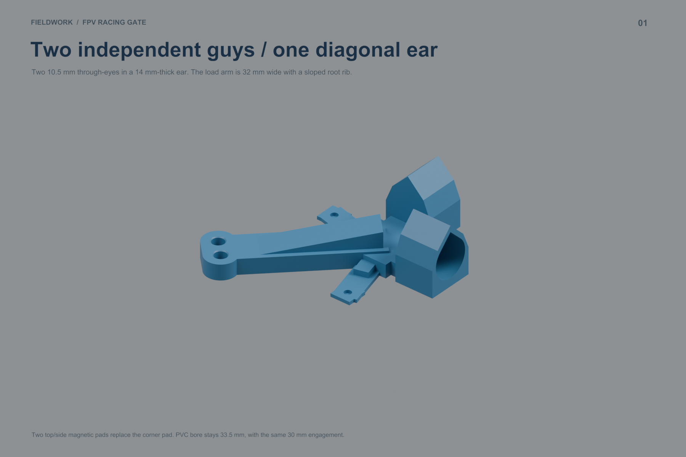
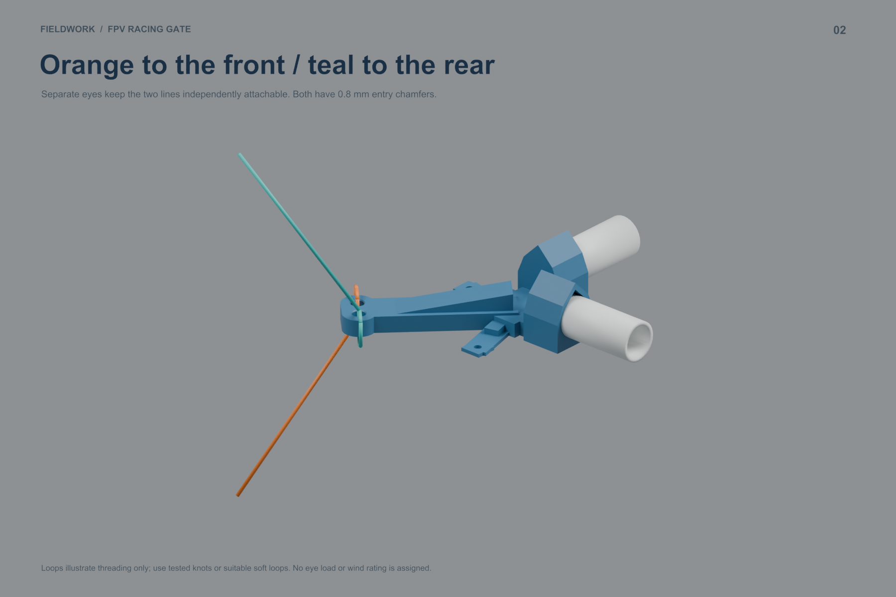
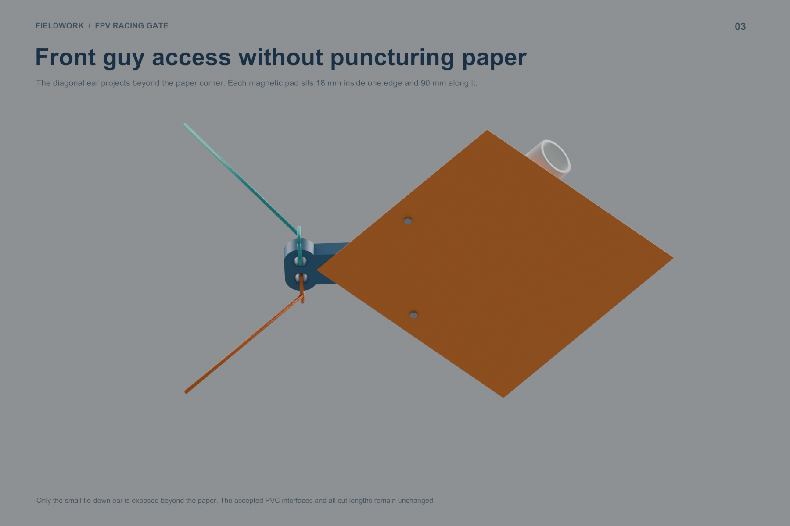
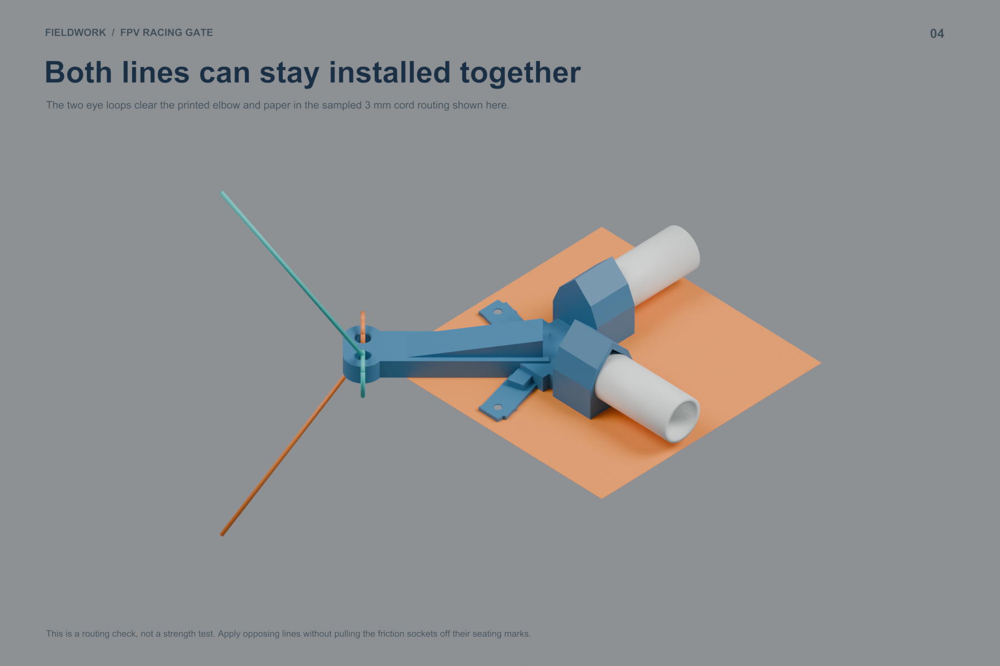
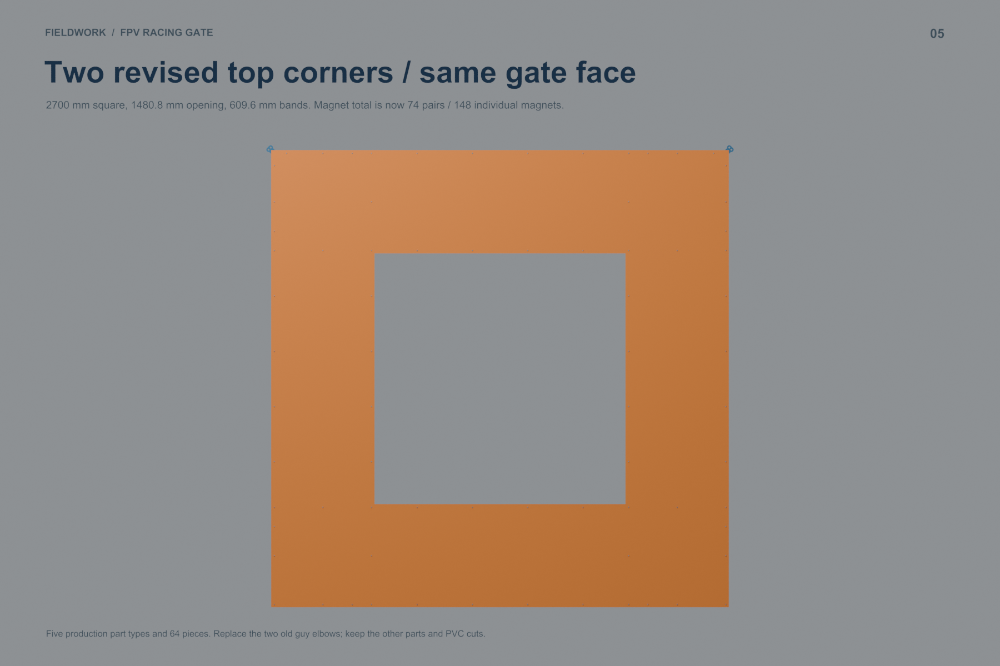
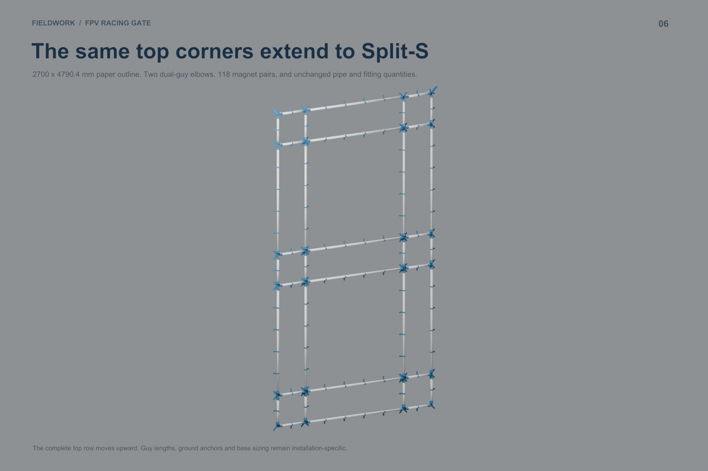
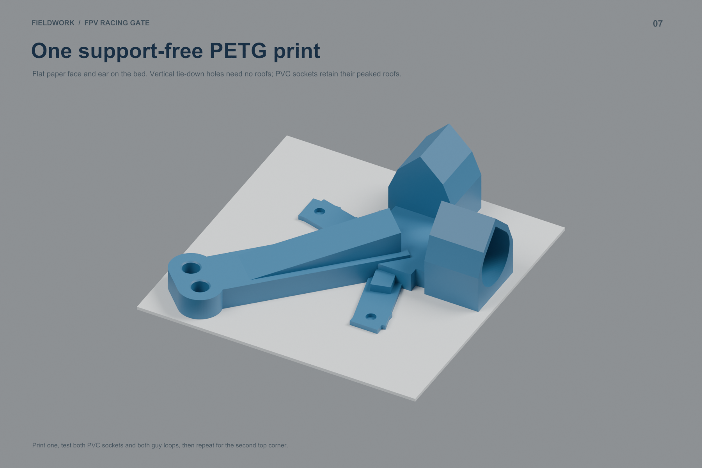
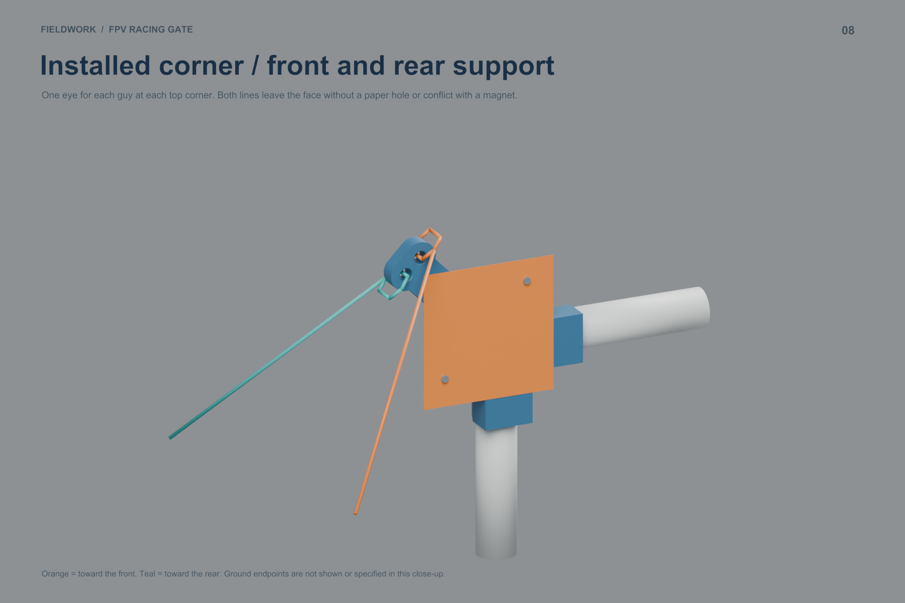

Baseline committed as 6a7fb47. A reinforced diagonal ear extends beyond each top paper corner, with one 10.5 mm eye per guy. Top and side magnet pads replace the corner pad. The accepted 33.5 mm PVC sockets remain.
Blender model · Assembly/test PDF · Full guide · Download kit
The ear is intentionally visible about 28.6 mm beyond each adjacent paper edge. Its two holes let the front guy clear the paper without a cutout. Two top elbows add four individual magnets per gate. All other production STLs are unchanged.
| Part | Single | Stacked |
|---|---|---|
| ELBOW | 2 | 2 |
| DUAL_GUY_ELBOW | 2 | 2 |
| TEE | 8 | 12 |
| CROSS | 4 | 8 |
| MAG_SLEEVE | 48 | 80 |








Parts · Print queue · PVC cuts · Stock layout · Nodes · Sleeve stations · Magnets · Paper cuts · Node map · Paper map
Parts · Print queue · PVC cuts · Stock layout · Nodes · Sleeve stations · Magnets · Paper cuts · Node map · Paper map
Digital checks · Cord and paper clearance · Upgrade parts
The routed 3 mm cord loops clear the mesh and paper in the sampled geometry. Knots, eye strength, friction retention under guy loads and outdoor anchoring remain to be tested. No new print job has been sent.
{kind=link}
{kind=link}
{kind=link}
{kind=link}